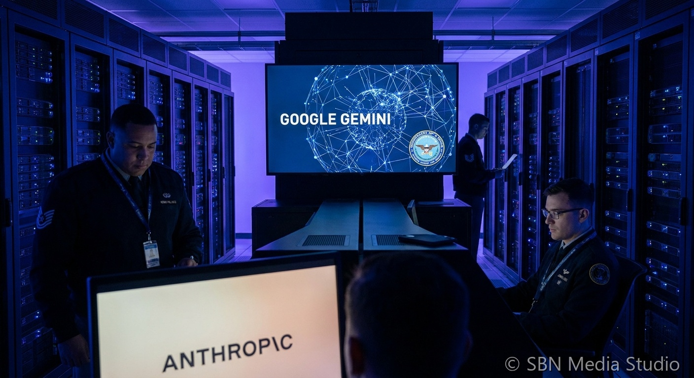

Pentagon Moves Toward Google Gemini After Six-Month Anthropic Phase-Out Over Military AI Policy

Google is in active negotiations with the Pentagon to deploy its Gemini AI models inside classified Department of Defense systems, following the US military's decision to initiate a six-month phase-out of Anthropic's Claude. The Anthropic relationship unraveled after a dispute over usage policy restrictions — Anthropic's acceptable use policies prohibit certain military and autonomous weapons applications that the Pentagon requires for operational flexibility. The DoD subsequently designated Anthropic a supply chain risk and began transitioning away from Claude across military contractors and internal DoD systems, according to reporting by Newsweek and The Defense Post.
Google is seeking contract language that bars domestic mass surveillance and autonomous weapons deployment without appropriate human oversight, but the Pentagon is pushing for broad 'all lawful uses' wording that would give the military greater operational latitude than Google's standard AI safety commitments allow. The outcome of these negotiations is being closely watched across the AI industry, as the contract terms agreed between Google and DoD are expected to set a template for how every major frontier AI lab negotiates classified Pentagon deployments going forward. Separately, the negotiations reportedly include plans to install racks of GPUs alongside Google's custom Tensor Processing Units (TPUs) inside classified environments — the first time TPUs would be deployed within DoD classified networks.
The opening emerged partly because Google had quietly maintained classified clearances and DoD relationships through its Google Cloud Public Sector division even while Anthropic held the primary AI contract. Google's Gemini models, particularly Gemini 3.1 Pro, have scored at or near the top of several reasoning and knowledge work benchmarks in 2026, making them a credible technical alternative to Claude. Defense analysts noted that the precedent being set — AI labs negotiating direct access to classified military infrastructure — represents a significant escalation of AI's role in national security, with implications for how future AI governance frameworks will balance commercial safety commitments against government operational requirements.